<style> .reveal h1, .reveal h2, .reveal h3, .reveal h4, .reveal h5, .reveal h6 { text-transform: none; } .reveal h2 { font-size: 60px; } .crick_off_white_theme { background-color: #f2f6f9; background-repeat: no-repeat; background-image: url("images/logos/CRICK_Brandmark_01_transparent.png"); background-position: left 27px top +20px; background-size: 10% } .crick_theme { background-color: #fffff; background-repeat: no-repeat; background-image: url("images/logos/CRICK_Brandmark_01_transparent.png"); background-position: left 27px top +20px; background-size: 10% } .datatitle_theme { background-color: #fffff; background-repeat: no-repeat; background-image: url("images/logos/CRICK_Brandmark_01_transparent.png"), url("images/zarr_illusatrations_300dpi/clara-shares-300dpi.png"), url('data:image/svg+xml;utf8,<svg xmlns="http://www.w3.org/2000/svg"><text x="5%" y="5%" font-size="14" fill="black"> Henning Falk, ©2022 NumFOCUS, CC BY 4.0 license</text></svg>'); background-position: left 27px top +20px, left -350px top 200px, left -40px top 720px; background-size: 10%, 40%, 100%; } .crickAck_theme { background-color: #fffff; background-repeat: no-repeat; background-image: url("images/logos/CRICK_Brandmark_01_transparent.png"), url("images/zarr_illusatrations_300dpi/qui-downloads-300dpi.png"), url('data:image/svg+xml;utf8,<svg xmlns="http://www.w3.org/2000/svg"><text x="5%" y="5%" font-size="14" fill="black"> Henning Falk, ©2022 NumFOCUS, CC BY 4.0 license</text></svg>'); background-position: left 27px top +20px, right 10px top +50px, left 750px top +400px; background-size: 10%, 30%, 100%; } .reveal { text-transform: none; !important } .reveal section img { border-width:0; border-color: white; } .img_panel { width: 450px; } .nobullet li { list-style: none; } table.centre { width: 100%; } .reveal .centre td { text-align: center; } .rot90 { -webkit-transform: rotate(90deg); transform: rotate(90deg); } .reveal .title { position:absolute; bottom:100%; margin:5px; color:red; } #cf { position:relative; height:281px; width:450px; margin:0 auto; } #cf img { position:absolute; left:0; -webkit-transition: opacity 1s ease-in-out; -moz-transition: opacity 1s ease-in-out; -o-transition: opacity 1s ease-in-out; transition: opacity 1s ease-in-out; } #cf img.top:hover { opacity:0; } #left { margin: 10px 0 15px 20px; text-align: left; float: left; z-index:-10; width:48%; font-size: 0.85em; line-height: 1.5; } #right { margin: 10px 0 15px 0; float: right; text-align: left; z-index:-10; width:48%; font-size: 0.85em; [line height](line-height): 1.5; } </style> <!-- .slide: data-state="datatitle_theme" --> ## Beyond the microscope ### - managing and repurposing image data and workflow Ken Ho, Donald Bell Septemebr 2026 --- <!-- .slide: data-state="crick_theme" --> ### What is an image? <div id="left"> <p>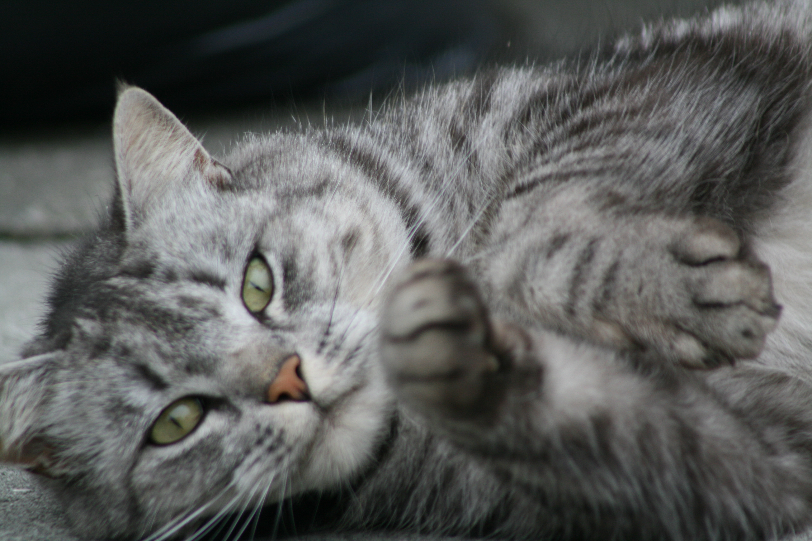</p> <div align="left"> <font size=3> (Helgi Halldórsson, wikipedia) </font> </div> </div> <div id="right"> <p>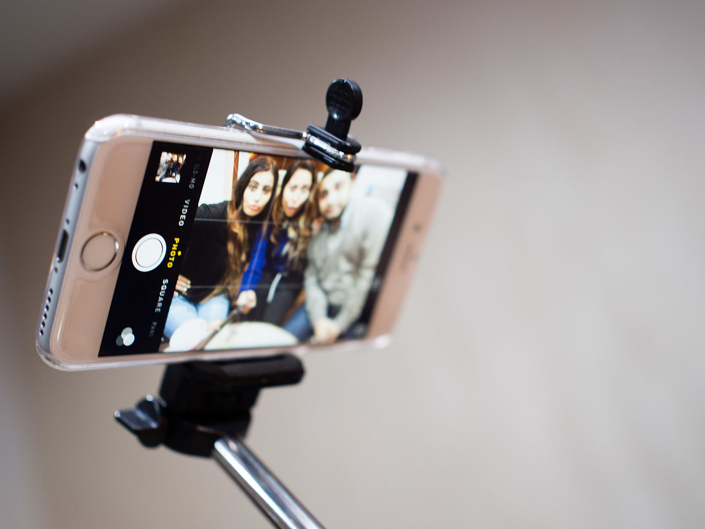</p> <div align="left"> <font size=3> (Ravi Kotecha, wikipedia) </font> </div> </div> Notes: in principle, the same advice can be used. v--- <!-- .slide: data-state="crick_theme" --> ## Analog image  <font size=4> [Fujifilm Corp. https://global.fujifilm.com/en/about/rd/technology](https://global.fujifilm.com/en/about/rd/technology) </font> v--- <!-- .slide: data-state="crick_theme" --> ## Digital sensors <!--  --> <img src="https://www.ic-components.com/upfile/images/91/20260227071053792.jpg" height=400px> <p> <font size=2> [Copyright © 2026 IC-Components.com All right Reserved.](https://www.ic-components.com) </font> v--- <!-- .slide: data-state="crick_theme" --> ## Dexel vs Pixel  <font size=4> [Schroth-Diez, B., Guilbert, T., & Strambio De Castillia, C. (2026). <br> European Light Microscopy Initiative (ELMI2026), Coimbra, Portugal](https://doi.org/10.5281/zenodo.20820692) </font> v--- <!-- .slide: data-state="crick_theme" --> ## Digital vs analog  <font size=4> [© Copyright EVIDENT, All rights reserved 2026](https://evidentscientific.com/en/microscope-resource/knowledge-hub/digital-imaging/digitalimagebasics) </font> Notes: Light comes through the instruments and microscopes, a natural picture or an image is captured by a digital sensor or camera. Light intensities that fall on the sensors/cameras create a continuous tone of intensities over the sensing area and are then captured by the camera's recording medium. In the past, film captures the intensities based on the chemical's component of the film medium. Today light, that falls on the digital sensor, is converted from a continuous level to discrete level by sampling and quantization. Continuous light tone can be viewed an analog continuous signal. It is sampled and quantized into discrete levels (see [Figure 1.](#fig-sampling)). The digital sample is stored and represented the analog signal. v--- <!-- .slide: data-state="crick_theme" --> ## Digital images * A 2D matrix or a function \\(f(x,y)\\). * The \\(x\\) and \\(y\\) are spatial coordinates * Amplitude of \\(f\\) is the intensity of an image * Images are matrices of natural numbers  <!-- .element: class="fragment" --> <font size=4> [© Copyright EVIDENT, All rights reserved 2026](https://evidentscientific.com/en/microscope-resource/knowledge-hub/digital-imaging/digitalimagebasics) </font> Notes: light intensity that reaches digital camera or detector. Digital camera and digital point detector record finite discrete quantities of intensity at each point location, i.e. a dexel and forming a pixel. Images are matrices of natural numbers, i.e. integers. v--- <!-- .slide: data-state="crick_theme" --> ## Image = Data <p>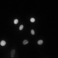</p> <br> <font size=3> ERK activity in rat kidney epithelial (NRK-52E) cells; <a href="https://ssbd.riken.jp/omero/webclient/?show=image-33724">SSBD image ID:3374</a>; Aoki et al. (2013) </font> <br> <span class="fragment fade-in" data-fragment-index="1"> <font size=3 alight=right> Cropped image [0-12, 65-80] </font> <br> <p>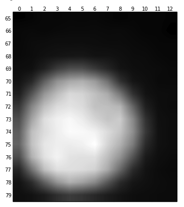</p> </span> <span class="fragment fade-in" data-fragment-index="2"> <p>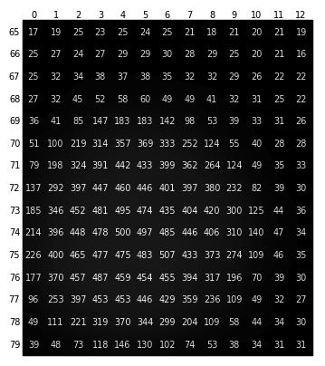</p> </span> <span class="fragment fade-in" data-fragment-index="3"> <p>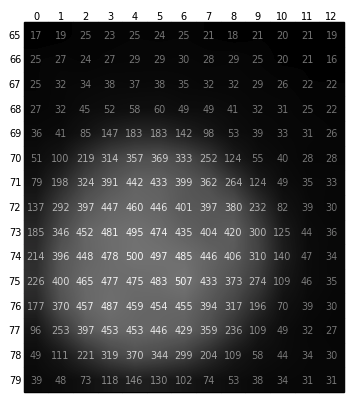</p> </span> </span> --- <!-- .slide: data-state="crick_theme" --> ### Biological images <p class="fragment slide-in"> <font color=red> Are there any difference between a selfie and biological ones? </font> </p> <div id="left"> <div align="left"> <font size=3> (Ravi Kotecha, wikipedia) </font> </div> </div> <div id="right"> <p>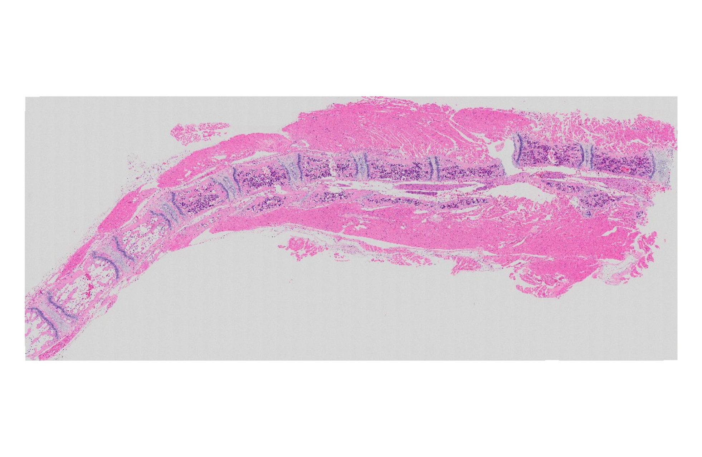</p> <div align="center"> <a href="https://idr.openmicroscopy.org/webclient/?show=image-13461616"><font size=4>IDR Image 13461616</font></a> </div> <font size=2> MarrowQuant Quantification of Bone Marrow Compartments in Histological Sections Mus musculus (Tratwal et al., Endocrinol 2020) </font> </div> Notes: Bioimage can have many channels, normal selfie has only 3 channels RGB. Bioimage can be quite large, The image here is 72971 x 29622, i.e. 72Kx29k. High definition TV only goes up to 8Kx8K. v--- <!-- .slide: data-state="crick_theme" --> ## Bio-Image <div id="left"> Normal images have only 3 channels <br> <font color=red>Red</font>,<font color=green>Green</font>,<font color=blue>Blue</font>, i.e. <font color=red>R</font><font color=green>G</font><font color=blue>B</font> <!-- .element: class="fragment" test --> </div> <div id="right"> BioImage can have many channels <!-- .element: class="fragment" test --> [](https://idr.openmicroscopy.org/webclient/img_detail/5025551/) <!-- .element: class="fragment" test --> <font size=5> [Durand M, et al, J Exp Med. 2019 IDR:5025551](https://pubmed.ncbi.nlm.nih.gov/31072818/) </font> <!-- .element: class="fragment" test --> </div> <div id="left"> <video controls height="300" autoplay loop muted> <source src="https://bioimagebook.github.io/_static/videos/luts_intro.mp4" type="video/mp4"> Your browser does not support the video tag. </video> <!-- .element: class="fragment" test --> <font size=2> By Pete Bankhead © Copyright 2022-2025. Licensed under CC-BY 4.0, </font> <!-- .element: class="fragment" test --> </div> v--- ### Bio-Image <span class="fragment fade-in" data-fragment-index="1"> <div id="right"> <font size=6> * BioImage can be much larger </font> <br> <font size=4> e.g. size =165120 x 84480 (165K x 84K) </font> [](https://images.jax.org/webclient/img_detail/370976/?dataset=5552) <font size=3> <br> License CC-BY 4.0, Bob.Braun@jax.org <br> Mouse male homozygous and wild type reproductive organs Created for the Bill and Melinda Gates Foundation. </font> </div> <div id="left"> <font size=6> * Hightest definition TV <br> 8K x 8k resolution </font>  <font size=3> Wikipedia Under the Creative Commons CC0 1.0 </font> </div> </span> v--- <!-- .slide: data-state="crick_theme" --> ## Bio-Image <font size=5> * Normal image has only 256 level of intensity, or 8 bit * Our eyes cannot see the difference if there are more levels * Bio-image tends to use higher bit depth to have better details </font> <p>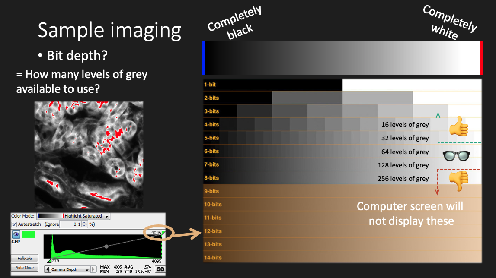</p> <br> <font size=3> Camille Charoy 2023 </font> Notes: 1 bit has 2 values, 0 and 1, so 8 bit 2 to the power 8, i.e. 256 that it can represent. In imaging, we use 0~255 v--- <!-- .slide: data-state="crick_theme" --> ## Seeing is not believing You can ONLY see a very small part of your data <img src="images/DALL·E 2023-03-12 17.53.07.png" height=350px> <br> <font size=4> “Looking up at the sky from the bottom of a well” - Ken × DALL·E <br> (This image was created with the assistance of AI; <a href="https://doi.org/10.48550/arXiv.2204.06125">Ramesh et al. 2022</a>) </font> --- <!-- .slide: data-state="crick_theme" --> ### An image is more than pixels <p> <span class="fragment fade-in" data-fragment-index="1"> <span class="fragment fade-out" data-fragment-index="4"> <font color="blue" size=6> What are these images, what instruments were used? </font> </span></br> <span class="fragment slide-in" data-fragment-index="5"> <font color="red" align="left"> Image without metadata is only a set of numbers </font> </span> </p> <div id="right"> <p>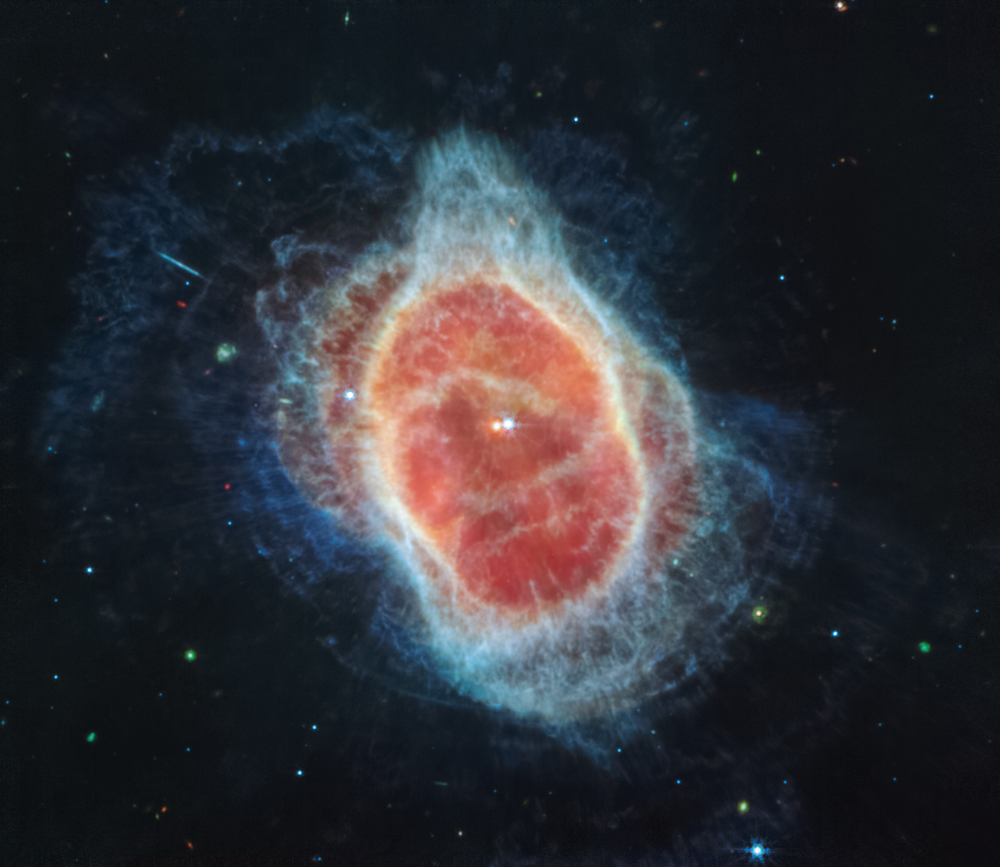</p> <p class="fragment slide-in" data-fragment-index="3" style="line-height:10px;"> <font size=3> Southern Ring Nebula (NGC 3132), captured by Webb’s Mid-Infrared Instrument (MIRI) <a href="https://webbtelescope.org/contents/media/images/2022/033/01G70SN4XRZCDVQWB2DN844VFR?news=true">IMAGE</a>: NASA, ESA, CSA, STScI </font> </p> </div> <div id="left"> <p>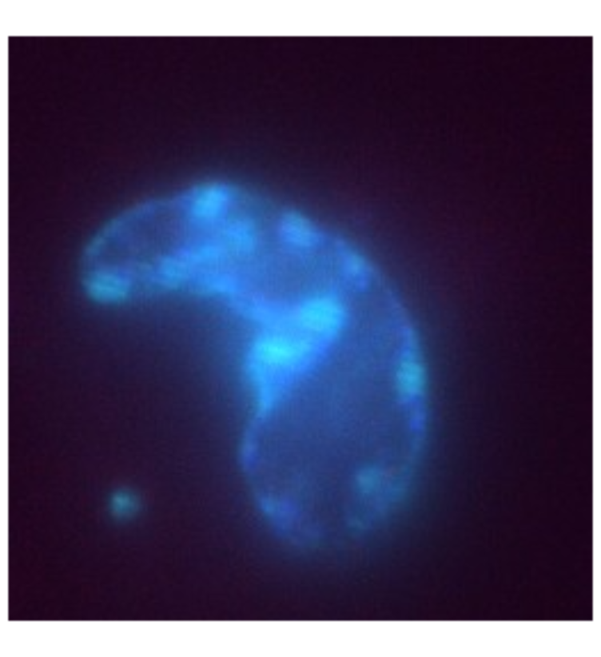</p> <p class="fragment slide-in" data-fragment-index="2" style="line-height:10px;"> <font size=3> Mouse emryonic stem cells taken from a DeltaVision OMX V3 Blaze system 60x/1.42 NA Plan Apo oil immersion objective (Olympus)(IDR image 13422210) </font> </p> </div> </div> Notes:Unfortunately, metadata are normally treated as an afterthought. It is important to provide names and terms consistently for the metadata to be useable. Therefore, it is paramount to use standardised words and terms based on one's image domain. v--- <!-- .slide: data-state="crick_theme" --> ### An image is more than pixels <font size=6 color="red" align="left"> Image without metadata is only a set of numbers </font> <br> <div id="right"> <p>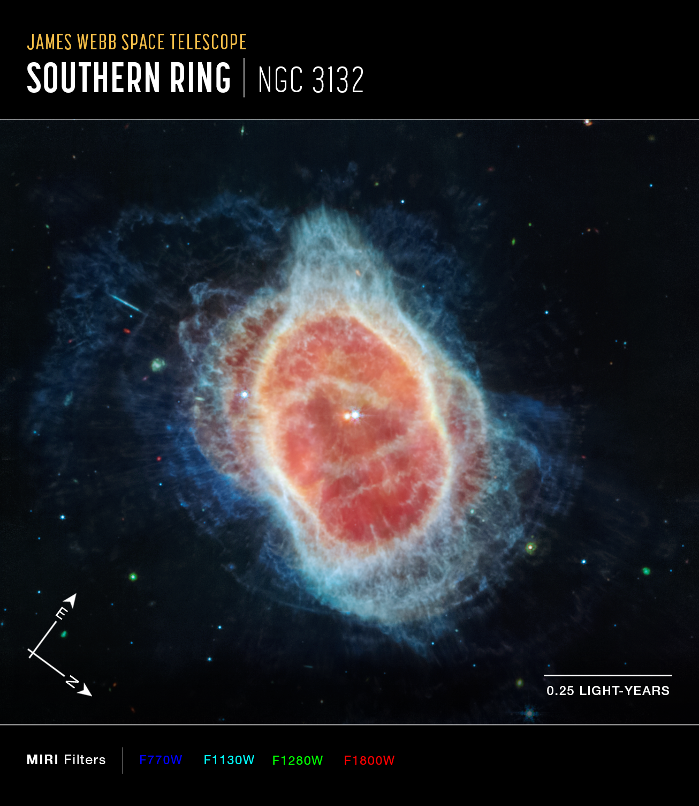</p> <br> </div> <div id="left"> <p>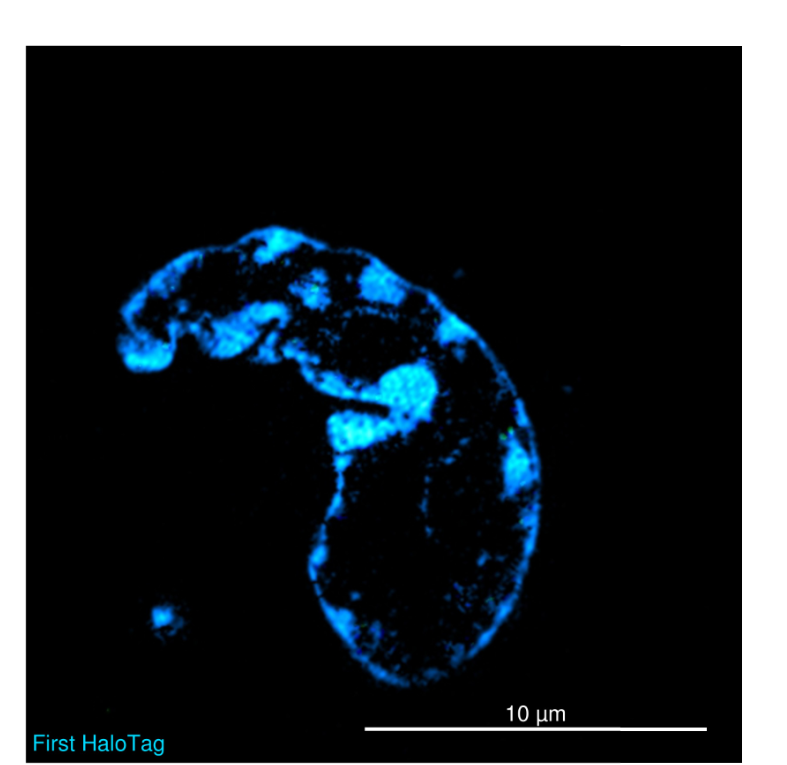</p> <br> <p style="line-height:10px;"> <font size=3> Mouse emryonic stem cells taken from a DeltaVision OMX V3 Blaze system 60x/1.42 NA Plan Apo oil immersion objective (Olympus)(IDR image 13422210) </font> </p> </div> </div> v--- <!-- .slide: data-state="crick_theme" --> ### Need for meta-data * To facilitate search and finding image data * To use for training Machine Learning/AI * More importantly ... * you need them for Methods in your paper! * it allows others to reproduce and improve on your methods <font color=red>We need consistancy on the use of metadata!</font> <!-- .element: class="fragment" test --> --- <!-- .slide: data-state="crick_theme" --> ##### REMBI - Recommended Metadata for Biological Images <p>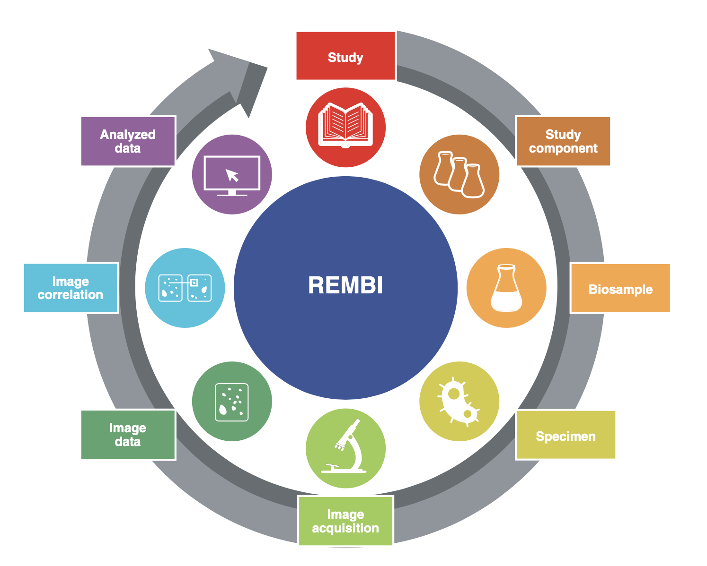</p> <br> <font size=4> (Sarkans et al., Nature Methods, 2021) </font> Notes: A community driven set of REMBI, mainly for reusing and archiving in public repositories v--- <!-- .slide: data-state="crick_theme" --> ##### REMBI module overview <p>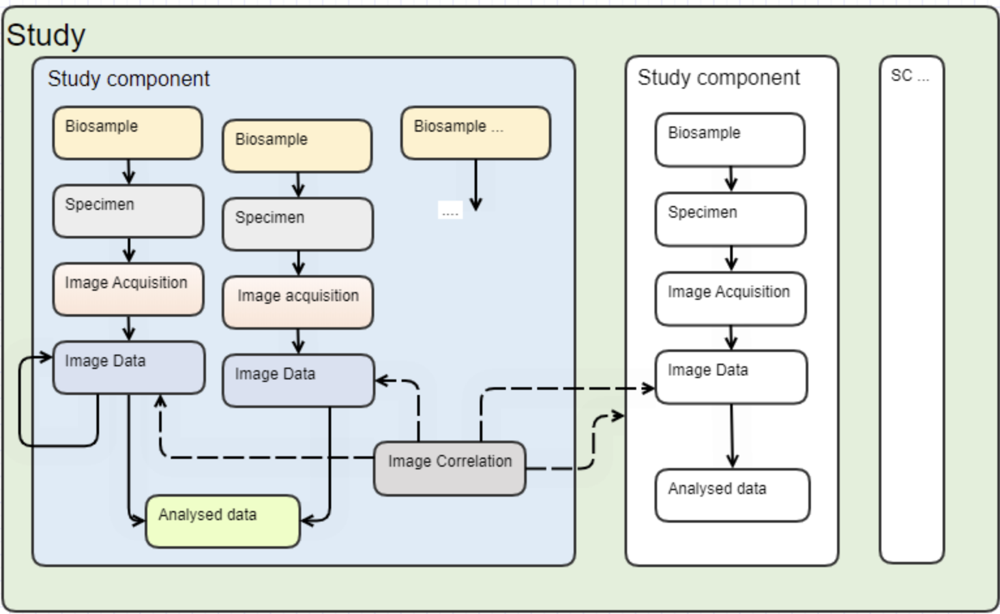</p> <br> <font size=3> (Sarkans et al., Nature Methods, 2021) </font> Notes: [REBMI](#mini-req) recommends minimum requirement of metadata that will allow for reuse and archiving at public repositories. It does not mean that the listed metadata are sufficient to support your image data management objectives. However, REMBI metadata provides a platform for us to add more metadata to serve our specific needs. v--- <!-- .slide: data-state="crick_theme" --> ##### REMBI template (study, biosample, specimen) <p>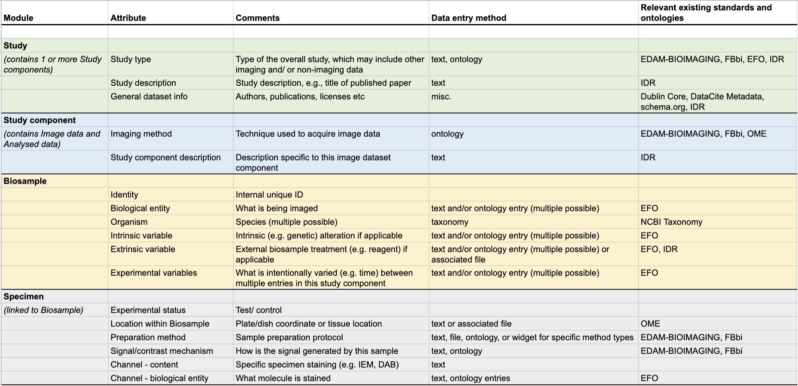</p> <br> <font size=4> (Sarkans et al., Nature Methods, 2021) </font> Notes: Within [REMBI](#mini-req), there are many modules and we are mainly concentrating on the image acquistion, image data and analysis data module of the REMI metadata. Other modules are beyond the scope of this talk. we will not go into the details of metadata for Study, biosamples, etc. v--- <!-- .slide: data-state="crick_theme" --> ##### REMBI template (image acq., image data, analysis data) <p>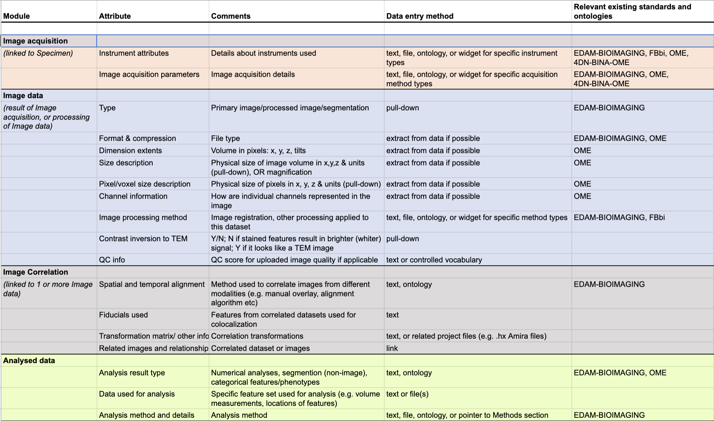</p> <br> <font size=4> (Sarkans et al., Nature Methods, 2021) </font> v--- <!-- .slide: data-state="crick_theme" --> ### IDR meta-data examples * [IDR](https://idr.openmicroscopy.org/) * The Image Data Resource (IDR) is a public repository of reference image datasets <div id="left"> * [IDR-0021](https://idr.openmicroscopy.org/webclient/?show=project-51) <p>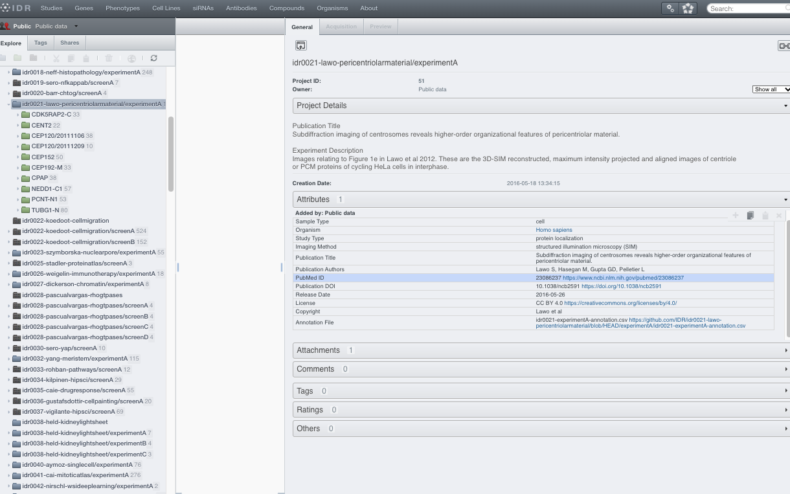</p> </div> <div id="right"> * [IDR-0021 metadata](https://github.com/IDR/idr0021-lawo-pericentriolarmaterial/blob/master/idr0021-study.txt) <p>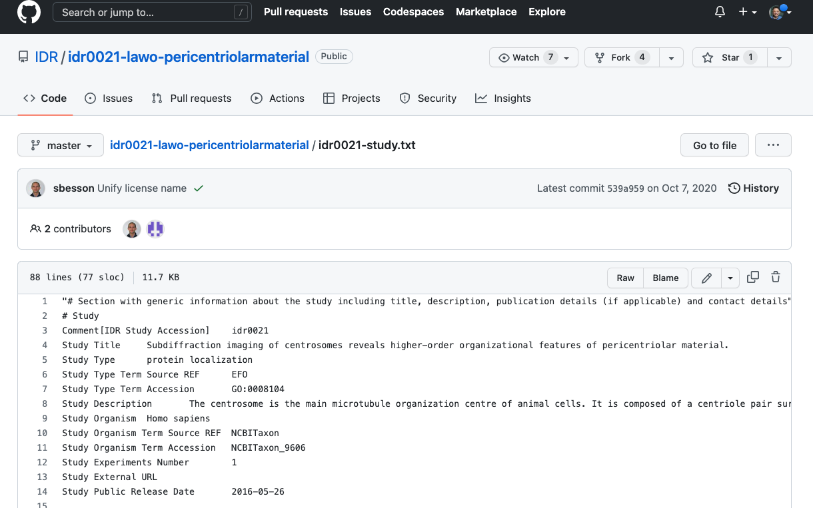</p> </div> v--- <!-- .slide: data-state="crick_theme" --> ### Other REMBI examples [](https://www.ebi.ac.uk/biostudies/bioimages/studies/S-BIAD3763?key=e37f667d-73cb-4796-a831-a38de7bd3a38) v--- <!-- .slide: data-state="crick_theme" --> ### Other REMBI examples [](https://www.ebi.ac.uk/biostudies/bioimages/studies/S-BIAD3763?key=e37f667d-73cb-4796-a831-a38de7bd3a38) <font size=5> [BioImage Archive entry](https://www.ebi.ac.uk/biostudies/bioimages/studies/S-BIAD3763?key=e37f667d-73cb-4796-a831-a38de7bd3a38) </font> --- <!-- .slide: data-state="crick_theme" --> ### Image filenames * Use POSIX-portable characters * Uppercase A to Z and lowercase a to z * Numbers 0 to 9 * Period (.) Underscore (_) Hyphen (-) * **Avoid**: * <font color=red>@ $ % & \ / : * ? " ' < > | ~ ` # ^ + = { } [ ] ; !” , </font> * no <font color=red>space</font> and no <font color=red>tab</font> please v--- <!-- .slide: data-state="crick_theme" --> ### Date format * Try **NOT** to use European or Asian characters set * **Date format**, please use **ISO 8601** - i.e. YYYY-MM-DD or YYYYMMDD - e.g. 2023-03-08 Notes: although it is not inclusive, that is how computer systems were built. Used to spend a couple of days to chase after a bug. It was because the name uses Japanese double byte space. v--- <!-- .slide: data-state="crick_theme" --> ### Metadata text * BIoImage Archive requirements:  v--- <!-- .slide: data-state="crick_theme" style="text-align: left;" --> ### Error!! * <font color=red>What is wrong with this text?</font> <div align="left"> <font size=4> Larvae dissected in PBS and fixed for 30 min in 4% formaldehyde in PBS. Discs were washed thrice in PBS, permeabilised in 0.2% Triton-X100 in PBS for 10 min and blocked in 5% Bovine serum albumin (BSA) in PBT (PBS + 0.2% Triton-X100) for 10+ min. Samples were incubated in primary antibodies overnight at 4°C in 5% BSA-PBT, washed thrice in PBT, incubated in secondary antibodies in 5% BSA-PBT for 2 h at room temperature (RT), washed again thrice in PBT and mounted in SlowFade diamond (ThermoFisher, S36963), using a 1.5H high precision cover glass (Marienfield Superior, 0107222) and slides (Epredia, X1XER308B) sealed with CoverGrip (Biotium, 23005). </font> </div> <span class="fragment slide-in" data-fragment-index="1"> <font color="red"> 4°C </font> </span> v--- <!-- .slide: data-state="crick_theme" --> ### Metadata template * Practice and correctness  --- <!-- .slide: data-state="crick_theme" --> ### File formats * Community driven open formats. * **OME-TIFF** is TIFF based * embedded OME-XML metadata within it. * **Bioformats** * a tool to access 160+ file formats * but ... not all formats are equal * **Check you have access to image meta-data** Notes: Most images are acquired in manufacturers' proprietary formats, czi, nd2, lif, etc. v--- <!-- .slide: data-state="crick_theme" --> ### OME-NGFF formats - future? <p>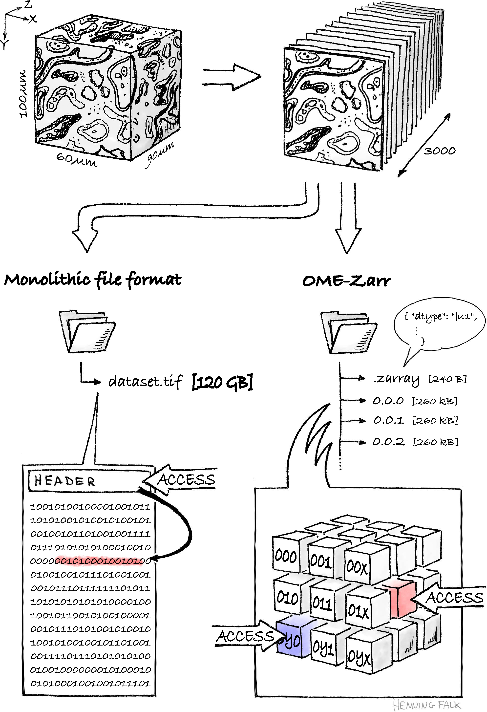</p> <br> <font size=2> Henning Falk, ©2022 NumFOCUS, CC BY 4.0 license </font> Notes: Bioformats support 160+ formats BUT not all meta-data are readable. v--- <!-- .slide: data-state="crick_theme" --> ### OME-NGFF formats [](https://ome.github.io/ome-ngff-validator/?source=https://radosgw.public.os.wwu.de/n4bi-fzj/ome2024-ngff-challenge/1micron_reconstructions_VOI2.zarr) --- <!-- .slide: data-state="crick_theme" --> ### Managing image data Why? <!-- .element: class="fragment" test --> Why can't we just save them in portable drives? <!-- .element: class="fragment" test --> or dump them in a basket? <!-- .element: class="fragment" test --> <span> <br> <font size=2> Henning Falk, ©2022 NumFOCUS, CC BY 4.0 license </font> </span> <!-- .element: class="fragment" test --> v--- <!-- .slide: data-state="crick_theme" --> ### Managing image data ### (individual perspective) * Digital data allows for quantification * Results are measurable * Organisation is key for - easy access, - reuse, re-analyse - reproducibility * Limited resources v--- <!-- .slide: data-state="crick_theme" --> #### Managing image data #### - a broader objectives 1. Keeping a record 2. Auditing - rebuke scientific/fraud challenge 3. Viewing - seeing is believing ... 4. Analysis and measurement 5. Sharing with collaborators 6. Reproduce to improve protocols/methods 7. Re-use for other analysis 8. Presentation/publication 9. Filing for IP/patents 10. Public engagement/relations Notes: - archiving experiment/images, - provenance for IP/patent requirement - ensure proper handling of image data for reproducibility - scientific/mishandling/fraud challenge v--- <!-- .slide: data-state="crick_theme" --> ### Overview of existing setup (?)  <font size=2> Based on Stephen J. Royle, The Digital Cell, 2020 </font> v--- <!-- .slide: data-state="crick_theme" --> ### Problem of a paper lab notebook * Only one person can access it at any one time. * Not searchable. * Data not easily accessible * Not reusable --- <!-- .slide: data-state="crick_theme" --> ### FAIR principle <div id="left"> Findable <br> Accessible <br> Interoperatble <br> Reuseable <br> <br> (Wilkinson et al., 2016) </div> <div id="right"> <p>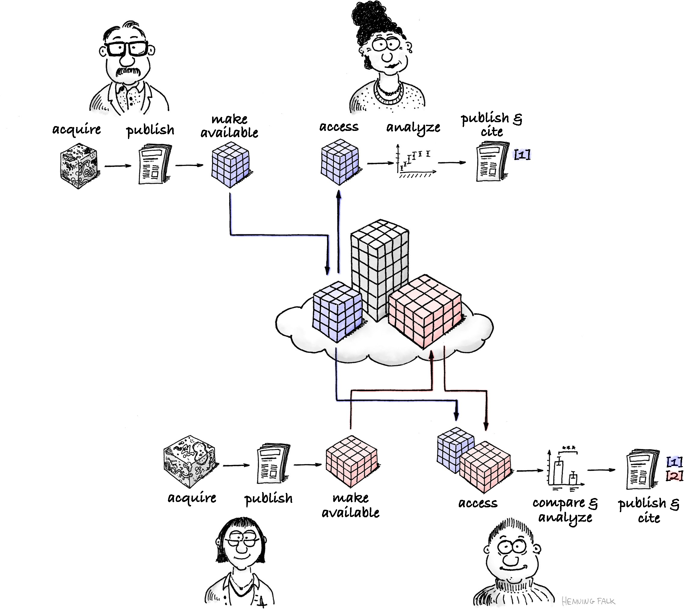</p>" <font size=2> Henning Falk, ©2022 NumFOCUS, CC BY 4.0 license </font> </div> Notes: - Mainly for open science - Principles applicable to any scientific data - The FAIR principle is for public repositories v--- <!-- .slide: data-state="crick_theme" --> ### FAIR: Findability * Requires a rich set of consistent metadata - To have a rich set of consistent metadata - Needs an essential (minimum) set of metadata. - Consistent usage of vocabulary, names, etc * **Searchable** Notes: Ideally: meta-data to be input the point of acquisition. v--- <!-- .slide: data-state="crick_theme" --> ### FAIR: Accessibility: * Downloadable, Browsable, (VPN map/connect drive) * Software accessible - e.g. open source - (e.g. free viewable apps) * Open access or authorisation/authentication - by external collaborators - by specific persons/projects Notes: Multiple resolutions, Accessing in parallel and in scale v--- <!-- .slide: data-state="crick_theme" --> ### FAIR: Interoperability: * Community supported open formats * OME-TIFF, OME-NGFF, etc. * Other proprietary but open specifications * Using open source maintained software * e.g. ImageJ, FIJI, QuPath, OMERO, etc. * Proprietary software that can import/export open formats v--- <!-- .slide: data-state="crick_theme" --> ## FAIR: Reusability: * Workflow * Multiple software can access and use the data * Reproducibility <font size=6>(Miura, Nørrelykke, EMBO, 2021)</font> - Methods reproducibility - <font size=6> Same results using same data and tools </font> - Results reproducibility (replication) - <font size=6>produce similar results using similar data/tools</font> - Inferential reproducibility (re-analyse) - <font size=6>produce same conclusion using different data/methods</font> --- <!-- .slide: data-state="crick_theme" --> ### A recommended setup * Electronic Lab Notebook * Labstep * Image Database * OMERO Plus * Making data searchable, sharable, accessible v--- <!-- .slide: data-state="crick_theme" --> ### Lapstep <p>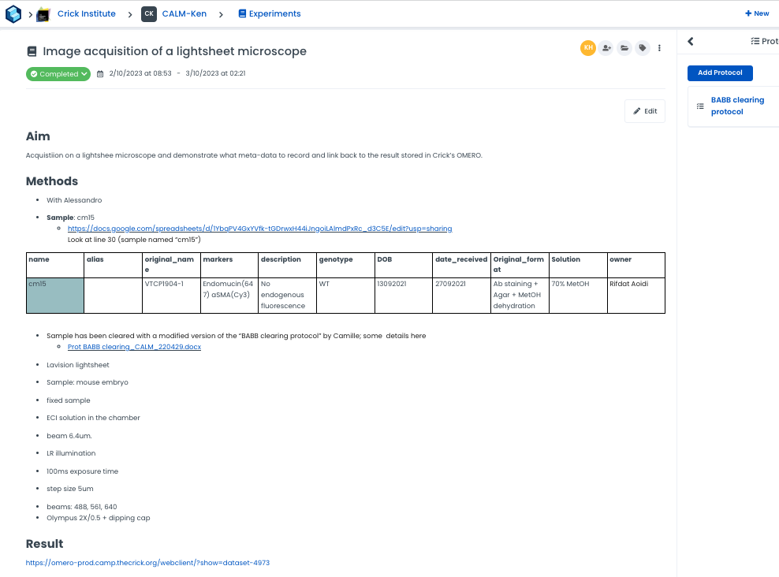</p> v--- <!-- .slide: data-state="crick_theme" --> ### OMERO <p>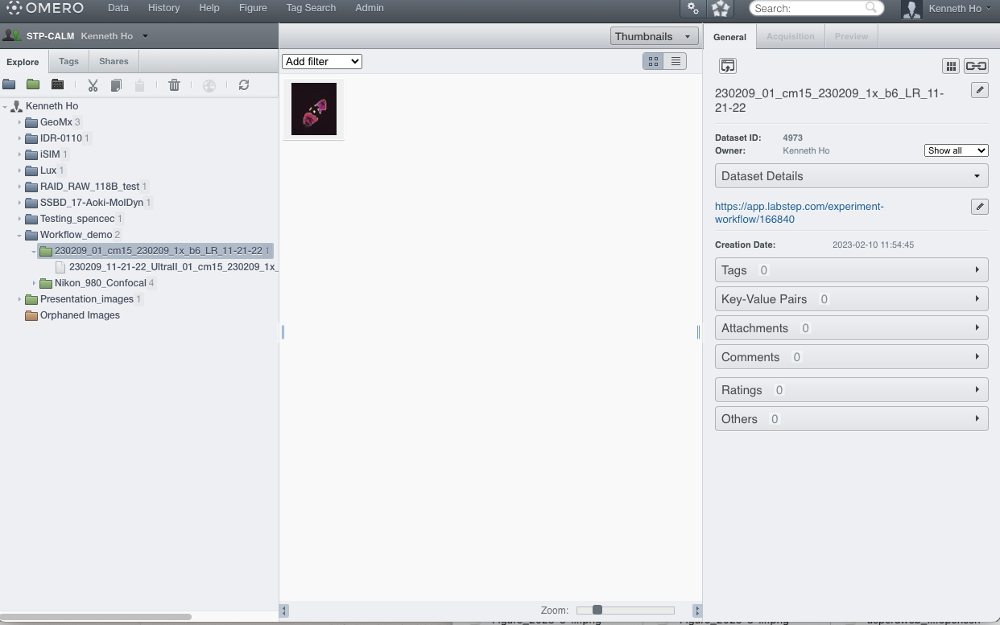</p> <br> <p>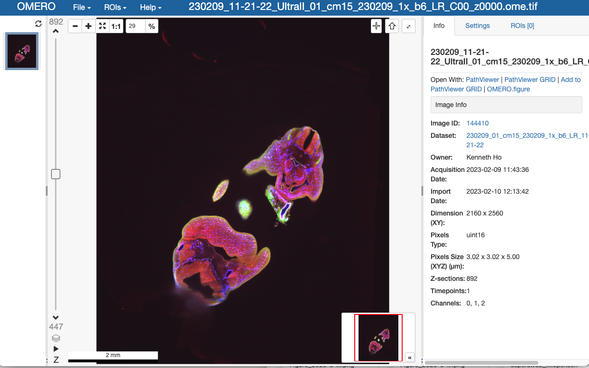</p> v--- <!-- .slide: data-state="crick_theme" -->  <font size=2> Based on Stephen J. Royle, The Digital Cell, 2020 </font> --- <!-- .slide: data-state="crick_theme" --> #### Managing image data - OMERO * OMERO is an image database * Open source * Developed at the University of Dundee. <br> <p>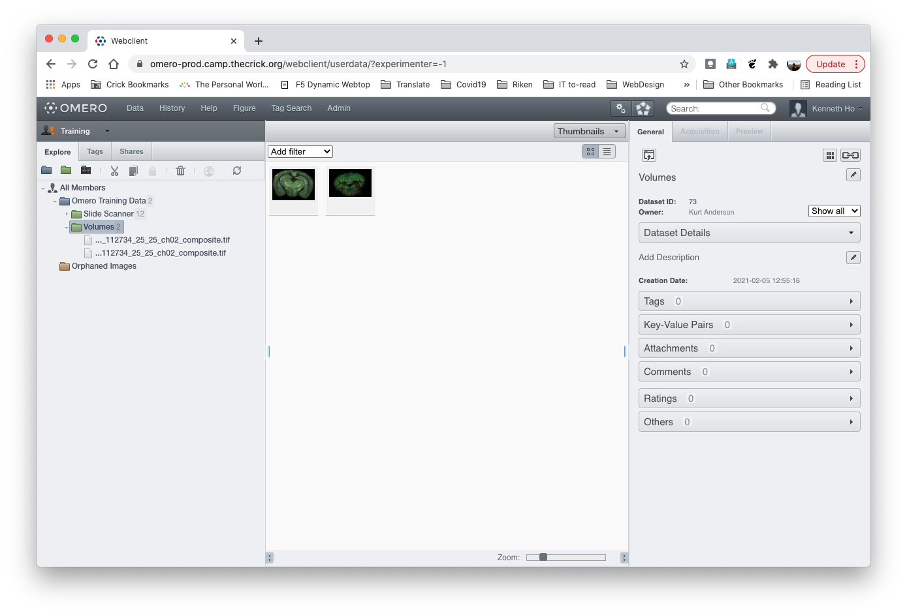</p> v--- <!-- .slide: data-state="ome_theme" --> ### Crick's OMERO - stats <p>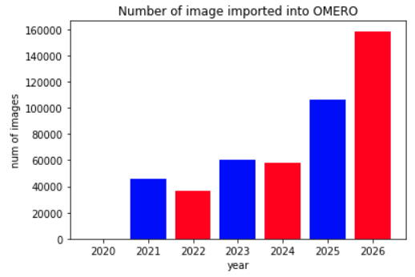</p> <p>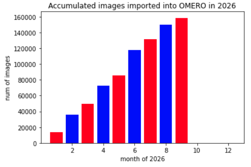</p> <font size=6> - Total number of users: 848 | groups: 184 - Total number of images: 466,280 - Total number of image files: 1,291,178 - ˜222TB of image data online, 50~80TB on tape - 247 users imported 158,505 in 2026 - 1 single lab has > 75K images </font> v--- <!-- .slide: data-state="crick_theme" --> #### OMERO Basic <div id="left"> - No fee or file quota <br> - 3 columns layout <p style="margin-left:30px"> - left: Project/Dataset tree </p> <p style="margin-left:30px"> - middle: thumbnails </p> <p style="margin-left:30px"> - right: metadata </p> - OMERO only has 2 layers <p style="margin-left:30px"> - Project (Grey folder) </p> <p style="margin-left:30px"> - Datasets (Green folder) </p> </div> <div id="right"> </div> v--- <!-- .slide: data-state="crick_theme" --> #### Managing metadata <div id="left"> - OME-metadata <br> - Metadata from manufacturer <br> - Image metadata <br> - User added metadata <p style="margin-left:30px"> - tags </p> <p style="margin-left:30px"> - key-value pairs </p> <p style="margin-left:30px"> - attachment </p> <p style="margin-left:30px"> - comments </p> </div> <div id="right"> <p>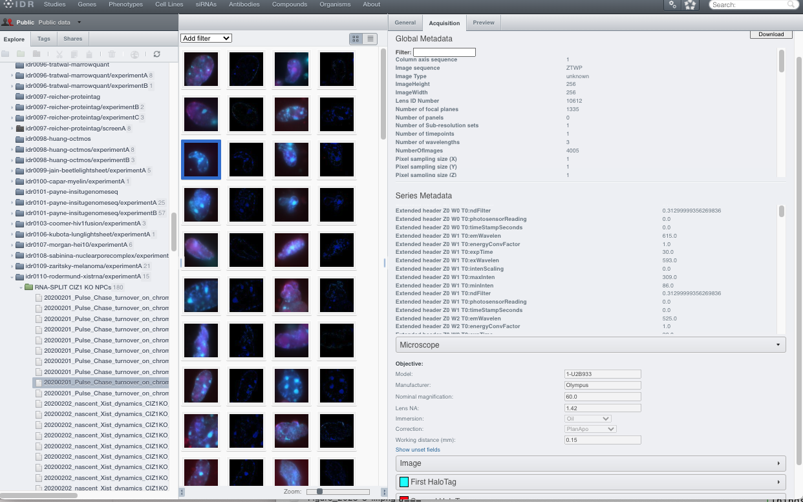</p> </div> Notes:https://code.research.uts.edu.au/MIF/OMERO-instructions/-/wikis/organising_data/csv/Managing-Key-values-with-csv-files v--- <!-- .slide: data-state="crick_theme" --> <p>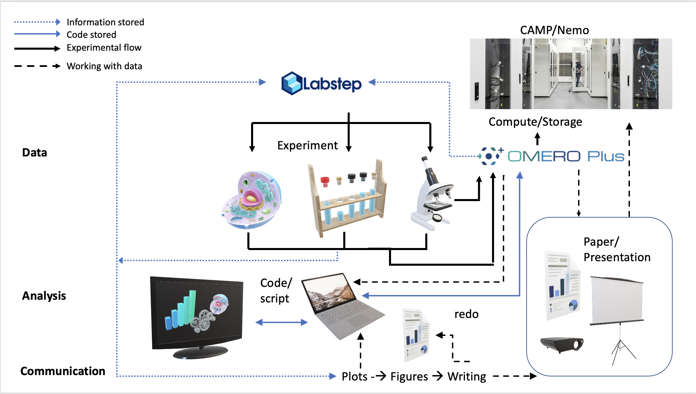</p> <br> <font size=2> Based on Stephen J. Royle, The Digital Cell, 2020 </font> <br> * [Lightsheet example](https://omero-prod.camp.thecrick.org/webclient/?show=image-148129) * [Confocal example](https://omero-prod.camp.thecrick.org/webclient/?show=dataset-4852) --- <!-- .slide: data-state="crick_theme" --> ## Findability * An example of filtering with metadata with tags and key-value pairs * [Characters](https://omero-prod.camp.thecrick.org/webclient/?show=dataset-5875) * [Mr Men](https://omero-prod.camp.thecrick.org/webclient/?show=dataset-5357) * [bioimages](https://omero-prod.camp.thecrick.org/webclient/?show=image-363704) * An example of a rich set of consistent metadata ([IDR Image ID: 13457536](https://idr.openmicroscopy.org/webclient/?show=image-13457536)) v--- <!-- .slide: data-state="crick_theme" --> ## Accessiblity * [Web browser](https://omero-prod.camp.thecrick.org)  v--- <!-- .slide: data-state="crick_theme" --> ### OMERO PathViewer <p>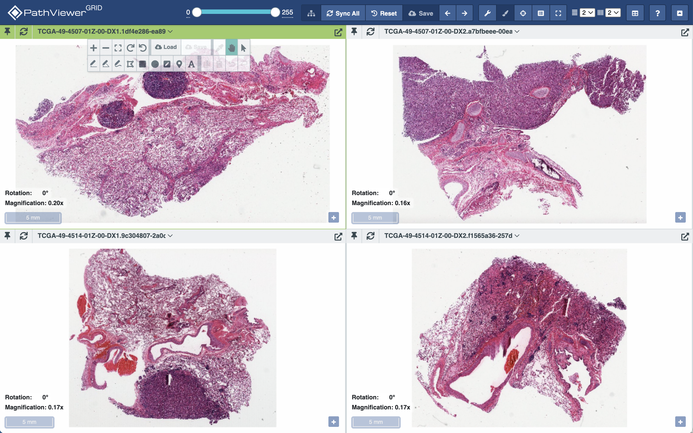</p> <br> <font size=2> NCI Genomic Data Commons (GDC); Grossman et al, 2016 </font> v--- ## Interoperability <p>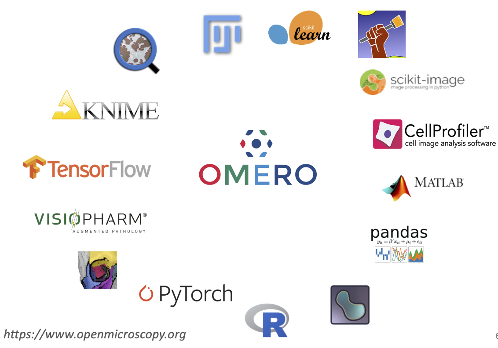</p> v--- <!-- .slide: data-state="crick_theme" --> ## Fiji + OMERO  v--- <!-- .slide: data-state="crick_theme" --> ## QuPath + OMERO  --- <!-- .slide: data-state="crick_theme" --> #### Overview of the Image Data Lifecycle  <font size=4> (A. Ciccarelli, 2021) </font> Notes: Image data lifecycle is about how image data changes over time. Biological images normally undergo various stages of processing and development during scientific research. The image data may not necessary changed, but instead intermediate image data are created through this process. The image data lifecycle is therefore refer to the whole set of image data from when the images were recorded by an instrument or a microscope through to when the image data are used to plot a graph or as a figure in an article in an academic journal and beyond. v--- <!-- .slide: data-state="crick_theme" --> ## Documenting workflow * using (Fiji) macro recorder * saving macro as attachment in OMERO <img src="images/fiji-macro.png" height=350px> <font size=4> SSBD image <a href="https://omero-prod.camp.thecrick.org/webclient/?show=image-145516"> ID:3374</a>; Aoki et al. (2013) </font> Notes: no need to save the result! <!-- .slide: data-state="crick_theme" --> ## Interoperability & Reusability * API - connecting to other software * e.g. [Python API](https://docs.openmicroscopy.org/omero/5.6.0/developers/Python.html), [Java API](https://docs.openmicroscopy.org/omero/5.6.0/developers/Java.html) * [Jupyter notebook](http://localhost:8889/notebooks/omero-related/omero-scripts/getImageKeyValues.ipynb) (Python) to access OMERO image data via API ) * Other examples on [Github](https://github.com/FrancisCrickInstitute/omero-demo/blob/main/OMERO_Demo.ipynb) * Interoperable with different datasets, file formats/microscopes. v--- <!-- .slide: data-state="crick_theme" --> ## OMERO + Jupyter notebook * Application codes/algorithms can be attached within the image or link to GitHub * [Crick's OMERO - image](https://omero-prod.camp.thecrick.org/webclient/?show=image-127694) * An on-demand Jupyter notebook can be loaded using MyBinder or Google Colab. * [IDR example](https://idr.openmicroscopy.org/webclient/?show=plate-9351) --- <!-- .slide: data-state="ome_theme" --> ### Crick's OMERO * Pipeline auto-import images from instruments <p>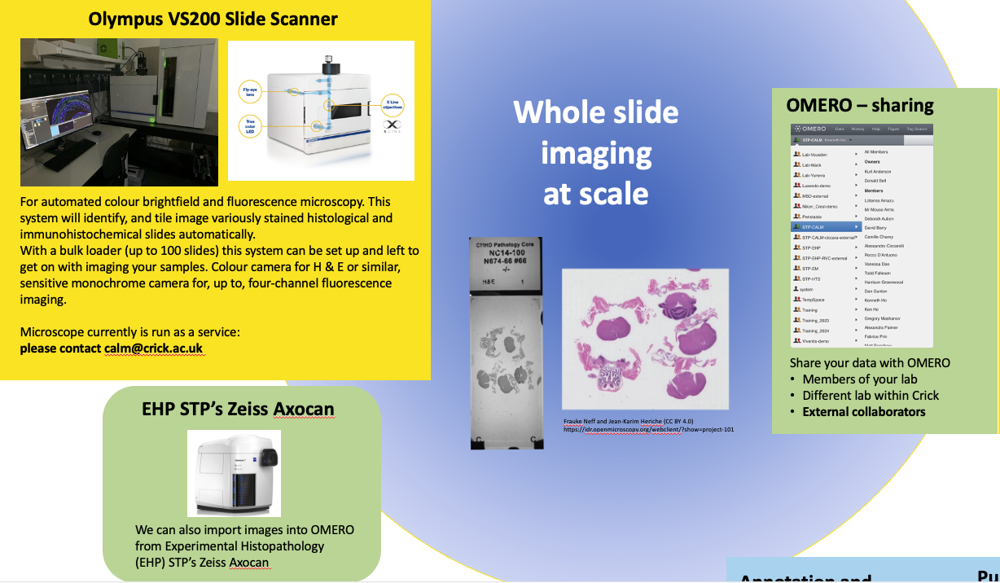</p> v--- <!-- .slide: data-state="ome_theme" --> ### Crick's OMERO <p>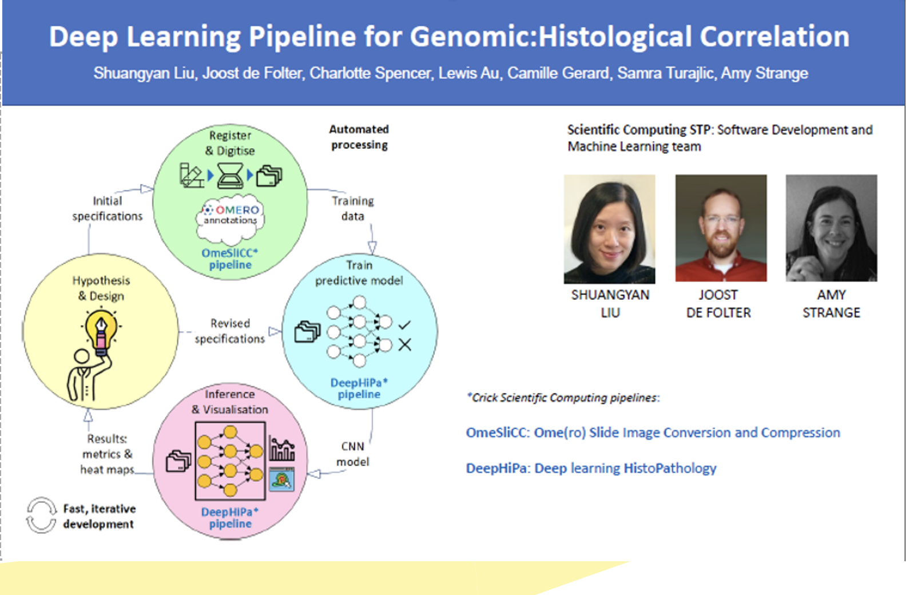</p> v--- <!-- .slide: data-state="ome_theme" --> ## How Crick labs using OMERO ### AI pipeline <p>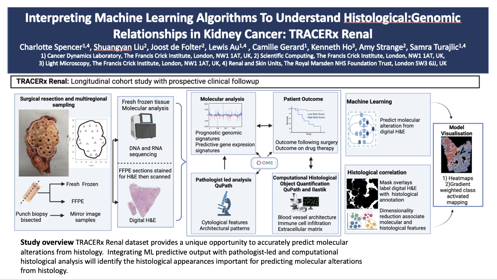</p> v--- <!-- .slide: data-state="crick_theme" --> ### OMERO collaboration * By creating separate groups, * users can share their images * At Crick, we have an external URL for access. * limited to port 80 and jpeg compression <div id="left"> <p>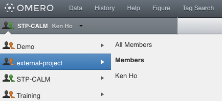</p> </div> <div id="right"> <p>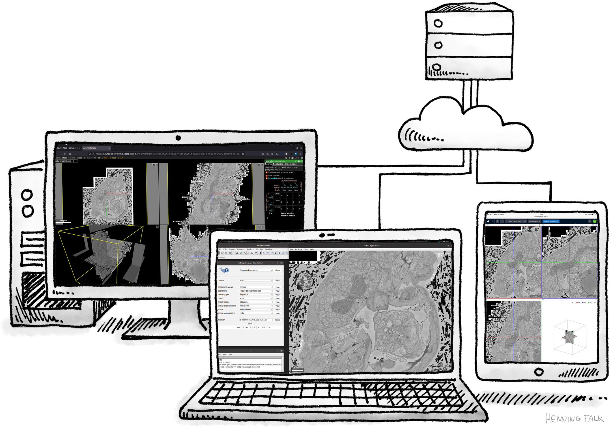</p> <br> <font size=2> Henning Falk, ©2022 NumFOCUS, CC BY 4.0 license </font> </div> --- --- <!-- .slide: data-state="crick_theme" --> ## Summary * Key points: * Use **Open** system that Crick supports * Images **with unique IDs** * Attach Images **with meta-data** * Images **link back to meta-data source** <br> <font size=2> Based on Stephen J. Royle, The Digital Cell, 2020 </font>